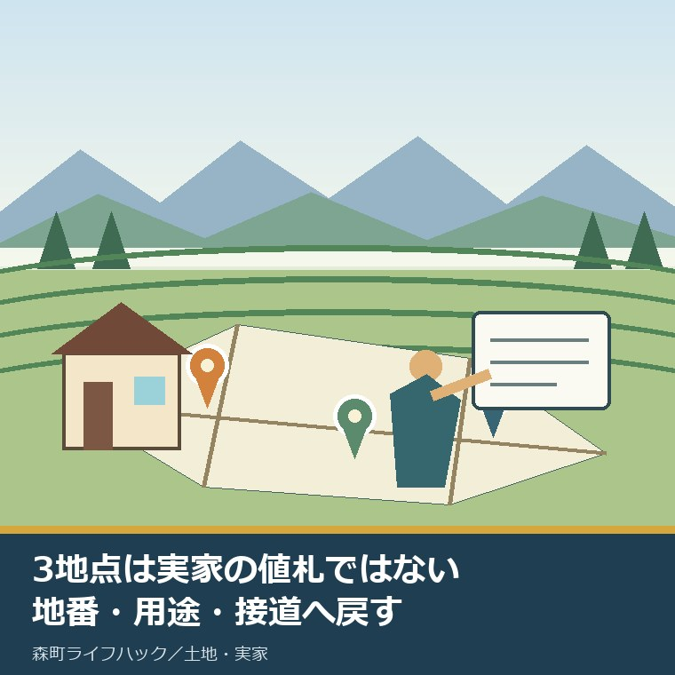
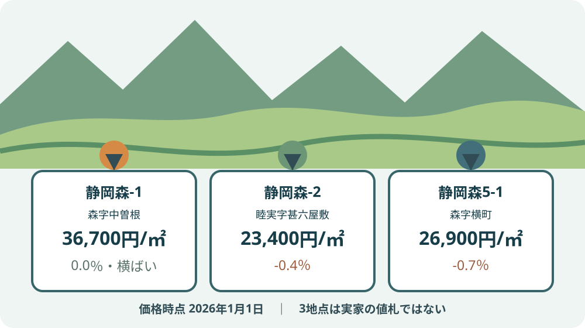
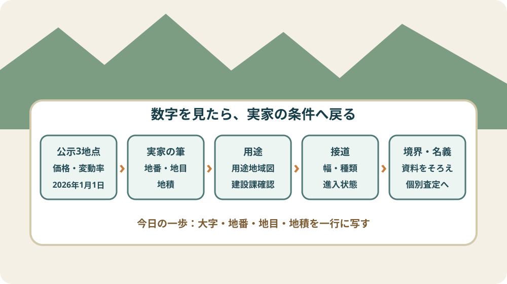

森町の地価公示2026｜実家売却前に見る3地点

この記事の要点
Q. 森町の実家を売るか未定です。2026年の地価公示は、どう見ればよいですか。
A. 森字中曽根36,700円/㎡、睦実23,400円/㎡、森字横町26,900円/㎡です。2025年比は1地点横ばい、2地点が0.4％・0.7％下落。ただし3地点は実家の値札ではありません。まず地番・地積・用途・接道を同じ欄で並べます。
森町の実家や土地を売るか、残すか、家族の結論は出ていない。それでも公的な価格指標だけは知っておきたい。この記事は、そう考え始めた家族のために、2026年の地価公示を使う順番を書きます。
町内の家を残している家族は、固定資産税、草刈り、建物の見回り、台風後の確認、町外からの移動を既に引き受けています。売却の話を始めるだけでも、名義人や書類の保管場所を探す負担が加わります。
だから最初から査定を取れ、売るなら早く決めろ、とは言いません。地価公示は、結論を迫る数字ではなく、家族の手元にある土地を同じ物差しで話す入口です。
静岡県が公開した「令和8年地価公示」の標準地価格一覧と、国土交通省の2026年地点データを2026年9月8日に確認しました。価格は2026年1月1日時点です。
先に訂正しておきます。「森町の3地点は0.0％から0.7％下落」と一括りにすると、0.0％まで下落に含めてしまいます。正しくは、1地点が横ばい、2地点がマイナス0.4％とマイナス0.7％です。
2026年の森町3地点で確定できる価格
2026年の森町の地価公示は3地点です。静岡県の一覧に載る標準地番号、所在、1㎡当たり価格、2025年価格、変動率をそのまま並べます。
| 標準地 | 所在・地番 | 2026年価格 | 2025年価格 | 変動率 | 利用現況 |
|---|---|---|---|---|---|
| 静岡森-1 | 森字中曽根1726番4 | 36,700円/㎡ | 36,700円/㎡ | 0.0％ | 住宅 |
| 静岡森-2 | 睦実字甚六屋敷2069番3 | 23,400円/㎡ | 23,500円/㎡ | -0.4％ | 住宅 |
| 静岡森5-1 | 森字横町351番1 | 26,900円/㎡ | 27,100円/㎡ | -0.7％ | 店舗兼住宅 |
利用現況は静岡県の価格一覧に欄がないため、同じ2026年1月1日時点の国土交通省地点データで補いました。森-1と森-2は住宅、森5-1は店舗兼住宅です。
標準地番号の末尾に「5-」が付く地点は、静岡県一覧の注記で商業地に分けられます。森5-1は、使われ方が店舗兼住宅で、区分は商業地です。
3地点で最も高いのは商業地の森5-1ではありません。住宅地の森-1、森字中曽根の36,700円/㎡です。名称から想像した順位と、実際の公示価格の順位は一致しません。
3地点で最も低い森-2の23,400円/㎡と森-1の差は13,300円/㎡、森-1は森-2の約1.57倍です。ただし、標準地の場所や条件を無視して町内全体の格差とは呼べません。

100㎡へ換算すると、差は見えるが売値にはならない
地価公示の1㎡当たり価格を100㎡へ掛けると、森-1は367万円、森-2は234万円、森5-1は269万円です。これは物差しの差を見やすくするための単純計算です。
坪へ直すと、1坪を3.305785㎡として、森-1は約12.1万円/坪、森-2は約7.7万円/坪、森5-1は約8.9万円/坪です。坪単価は静岡県の一覧に載る公表値ではなく、私の換算です。
2025年からの差額を100㎡で単純計算すると、森-1は0円、森-2はマイナス1万円、森5-1はマイナス2万円です。この計算も、個別の土地が1年間に失った金額を示しません。
地価公示は同じ標準地を継続して見るため、年ごとの方向をつかむ助けになります。一方、実家の土地と標準地が同じ形、同じ道路、同じ利用条件である保証はありません。
森町の3地点だけで町内の山林、農地、宅地を全部代表させることもできません。畑や山の相続税評価まで確認する場合は、森町の畑と山に路線価はない——倍率方式で土地の値段を見るで、別の物差しを整理しています。
地価公示は、実家に付ける値札ではない
地価公示は、標準地の1㎡当たりの正常価格です。静岡県は、土地取引で適正な価格を判断するための客観的な目安と説明しています。
価格は、自由な取引で通常成立すると認められる価格として、建物や土地を使う権利がないものと仮定して判定されます。建物付きの実家を、そのまま買い手へ渡す金額ではありません。
公示価格へ実家の地積を掛ければ、計算結果は出ます。しかし、接する道路の幅、間口、奥行き、旗竿形状、傾斜、擁壁、上下水道、境界、建物解体、残置物は計算に入っていません。
また、公示の3地点は2026年1月1日時点です。家族が売り出す日や成約する日の市場条件、買い手の目的、引渡し条件とも時点が違います。
空き家バンクに載る金額も、公示価格とは別です。2026年8月28日時点の掲載価格の幅は、森町の空き家バンク23件｜地区別の価格は13倍ひらくで、建物面積や築年を含めて読み直しています。
掲載価格は売主の希望を含み、成約価格とは限りません。公示価格、固定資産税の評価、相続税の評価、査定額、売出価格、成約価格は、名前を分けて記録します。
実家と3地点を比べる前に、四つの欄をそろえる
実家売却前の比較では、第一に大字と地番、第二に地目と地積、第三に用途地域、第四に接道をそろえます。この四つが空欄のままでは、近い標準地を選ぶ根拠がありません。
大字と地番は住所と同じとは限りません。固定資産税の課税明細、登記事項証明書、名寄帳などから、比較する土地の筆を特定します。
実家の敷地が複数筆なら、家の建つ宅地だけでなく、進入路、畑、山林が分かれていないかを確認します。森町で名寄帳を取り、実家の筆をすべて並べる手順は、課税明細だけでは数え切れない土地を探すための記事です。
用途地域は、森町公式の1万分の1用途地域図で入口を確認できます。町のページも参考資料として扱い、詳細な土地利用や建築規制は建設課へ確認するよう案内しています。
接道は、地図上で道路に触れているだけでは足りません。道路の種類、幅、敷地が接する長さ、進入の状態を現地と資料で確かめます。
森・睦実を含む地籍調査の完了地区について、森町は成果の閲覧と交付方法を公開しています。地籍調査では所有者、地番、地目、境界、地積を調べますが、個別地の最新登記や境界合意は資料を取り直して確認します。
価格を聞く前に境界、接道、名義を見る理由は、静岡県森町で家を売る前に、価格より境界・接道・名義を確認するで詳しく分けました。
地価公示以外の公的データと比べる場合も、基準日、土地の用途、地点条件、単位をそろえます。物差しの名前が違う数字を一つの坪単価へ混ぜず、出典と価格時点を横に残します。
良い点：3地点は、家族の会話に共通の基準日を置ける
森町の地価公示2026の良い点は、価格基準日が2026年1月1日で統一され、2025年価格と変動率が同じ表に載っていることです。
「あの辺は高いらしい」「山側は売れないらしい」という言い方を、標準地の住所と1㎡価格へ置き換えられます。家族が違う記憶を持っていても、出発点を一枚にできます。
所在地が地番まで示されるため、どの地点を見ているのかを確認できます。森と睦実を一つの平均へ丸めず、個別地点として残せます。
変動率も、上昇・横ばい・下落を感覚で決めずに済みます。2026年は森-1が0.0％、森-2がマイナス0.4％、森5-1がマイナス0.7％です。
公表値が3地点しかないことも、逆に役立ちます。自分の実家に近い答えが公開表だけでは出ない、と早い段階で分かるからです。
注文したい点：3地点の表だけでは、町内の空白が大きい
森町の公示地点は3つで、森字中曽根、睦実字甚六屋敷、森字横町です。三倉、天方、飯田など、町内の土地条件を3地点だけで直接比べられない地域が残ります。
静岡県の価格一覧は、価格と前年価格と変動率を一望できます。一方、実家所有者が知りたい用途地域、前面道路、標準地の形、上下水道などは、別の地点データや町の資料を開く必要があります。
「公示価格は売値ではない」と分かっても、次に何を集めるかが一覧だけでは見えません。地番、地積、用途、接道の四欄を添えた家族向けの確認票があると、使い道が具体的になります。
2026年に2地点が下がった理由を、この3行だけから断定することもできません。人口、交通、取引件数、個別地点の条件を調べず、森町全体が同じ率で下がったとは書けません。
数字が小さく動くほど、もっともらしい理由を付けたくなります。分からない原因は分からないままにし、家族の判断に必要な追加資料へ進む方が実用的です。

対案・結論：今日は実家の一筆を一行に写す
森町の実家を売るか未定の家族が2026年9月8日にできる小さな一歩は、固定資産税の課税明細などから、家が建つ土地の大字・地番・地目・地積を一行に写すことです。
その一行の横へ、森-1、森-2、森5-1のうち、場所と利用条件が比較的近そうな地点を一つ書きます。「近そう」でよく、査定の結論にはしません。
用途地域が分からなければ、森町公式の用途地域図へ印を付け、「建設課へ確認」と残します。道路の幅や種類が分からなければ、同じく空欄へせず「現地・窓口確認」と書きます。
課税明細が見つからない場合は、森町公式の税務関係証明書等の案内で、評価証明書、名寄帳、公図、土地台帳の取得方法を確認できます。誰が請求できるか、必要書類は何かを先に見ます。
この段階で売却の意思決定も、価格交渉も不要です。家族の中で誰が書類を持ち、誰が現地へ行けるかを決めれば、次の移動回数を減らせます。
家族に残す記録：公示価格と実家価格を同じ欄にしない
家族記録の左側には、公示地点の標準地番号、所在、2026年1月1日の1㎡価格、2025年価格、変動率を書きます。
右側には、実家の大字・地番・地目・地積、用途地域、接道、境界資料、名義人、建物の有無を置きます。左右を線で結んでも、同じ数字として合算しません。
固定資産税評価額が分かれば、「固定資産」と見出しを付けます。相続税評価を調べたら「相続税」、不動産会社の査定は「査定」、売り出す金額は「売出」と分けます。
資料には取得日と価格時点を添えます。地価公示2026の価格時点は2026年1月1日、この記事の最終確認日は2026年9月8日です。
空き家の維持費、草刈り回数、町外からの交通費、保険、修繕見込みも別欄へ書きます。土地価格だけで残す・売るを決めず、家族が既に負担している費用も同じ一枚で見ます。
大石の視点
私は大石浩之（磐田市／不動産業）です。体験ストックに森町の2026年地価公示3地点を使った一人称の成約事例はないため、ここからは公表情報を踏まえた私の判断として書きます。
地価公示は実家の値札じゃない。3地点の数字をそのまま掛けて売値を決めるのは、物差しの使い方を間違えている。
私が先に見るのは、実家の地番と地積が確定しているか、道路へどう接しているか、境界と名義を説明できるかです。価格の議論は、その条件を同じ紙へ載せてから始めます。
森-1の36,700円/㎡が3地点で最も高く、商業地の森5-1は26,900円/㎡です。「商業地だから上」という思い込みを、公表値が止めてくれます。これは地価公示を使う価値です。
私にも迷いがあります。1地点が横ばいなら安心材料にしたくなりますが、3地点のうちの1地点です。反対に2地点の下落だけを見て、森町の実家は急いで売るべきだとも言えません。
森町には、家を維持し、草を刈り、税を払い、遠方から戻っている家族がいます。その負担を無視して相場だけを語ると、売る・残すのどちらを選んでも続きません。
必要なのは大きな改革論ではなく、資料の担い手、現地へ行く人、維持費、相続の後継、空き家の状態を具体名詞で一枚にすることです。今日の一行が、その話を始めます。
森町の地価公示2026は、3地点から実家の条件へ戻す
森町の地価公示2026は、森-1が36,700円/㎡で横ばい、森-2が23,400円/㎡で0.4％下落、森5-1が26,900円/㎡で0.7％下落です。
3地点の価格は、町内すべての土地の平均でも、実家の売却価格でもありません。標準地の所在、用途、価格時点を確認し、実家の地番・地積・用途・接道を同じ欄で比較します。
今日の結論は、売却を決めることではありません。課税明細などから実家の一筆を一行に写し、比較する標準地と未確認欄を家族で共有することです。
よくある質問
Q1. 森町の地価公示2026は、どの3地点ですか。
A1. 2026年1月1日時点の3地点は、静岡森-1（森字中曽根1726番4）36,700円/㎡、静岡森-2（睦実字甚六屋敷2069番3）23,400円/㎡、静岡森5-1（森字横町351番1）26,900円/㎡です。2025年比は順に0.0％、マイナス0.4％、マイナス0.7％です。
Q2. 公示価格に土地面積を掛ければ、実家の売却価格になりますか。
A2. なりません。地価公示は標準地の1㎡当たりの正常価格で、個別の実家の成約額や査定額ではありません。地番、地積、用途地域、接道、形、傾斜、建物、境界、権利関係などが違うため、面積を掛けた値は比較用の算数にとどめます。
Q3. 実家を売るか未定の段階で、最初に何を確認しますか。
A3. 固定資産税の課税明細などから実家の大字・地番・地目・地積を一行に写し、3標準地のうち比較条件が近そうな地点へ印を付けます。売却を決める必要はありません。次に用途地域、接道、境界、名義を確認するための土台を作る作業です。
地価公示の地点、価格、変動率、利用現況、用途地域図、地籍調査成果、証明書の取得方法は更新される場合があります。個別の売却価格、税、境界、登記、建築の判断は、不動産会社、税理士、土地家屋調査士、司法書士、行政窓口など担当分野へ資料を示して確認してください。
参考にした公式情報
- 令和8年地価公示 標準地価格一覧（PDF）／静岡県（森町の3地点について、標準地番号、所在・地番、2026年の1㎡当たり価格、2025年価格、変動率を2026年9月8日に確認。資料は12ページで、森町3地点は12ページに掲載）
- 地価調査・地価公示とは／静岡県（地価公示が土地取引の適正価格を判断するための客観的な目安であること、価格の基準日が毎年1月1日であること、正常価格の考え方を2026年9月8日に確認）
- 地価公示データ 2026年版／国土交通省（森-1と森-2の利用現況が住宅、森5-1の利用現況が店舗兼住宅であることを、2026年1月1日時点の地点データで2026年9月8日に確認）
- 都市計画図（用途図）について／静岡県森町（1万分の1用途地域図が公開されていること、土地利用・建築規制の参考資料であり、詳細は建設課へ確認する案内を2026年9月8日に確認）
- 地籍調査の概要と閲覧、交付について／静岡県森町（所有者、地番、地目、境界、地積を調査すること、森・睦実を含む完了地区と成果の閲覧・交付方法を2026年9月8日に確認）
- 税務関係証明書等の発行・閲覧／静岡県森町（評価証明書、名寄帳、公図、土地台帳などの取得案内を2026年9月8日に確認）

磐田市で小さな不動産業を営みながら、森町の空き家・農地・実家じまいのご相談を受けています。地域と不動産実務をつなぐ目線で、確認の順番まで具体的に書きます。
最終確認日：2026-09-08 ／ 価格時点は2026年1月1日です。利用現況は静岡県の価格一覧ではなく国土交通省の2026年地点データで補完しました。100㎡換算、坪換算、地点間倍率は執筆者の単純計算で、森町・静岡県・国土交通省が公表した査定額ではありません。3地点は森町全域の平均でも、個別物件の売却価格でもありません。本記事は公表情報と執筆者の見解を分けて記載しています。